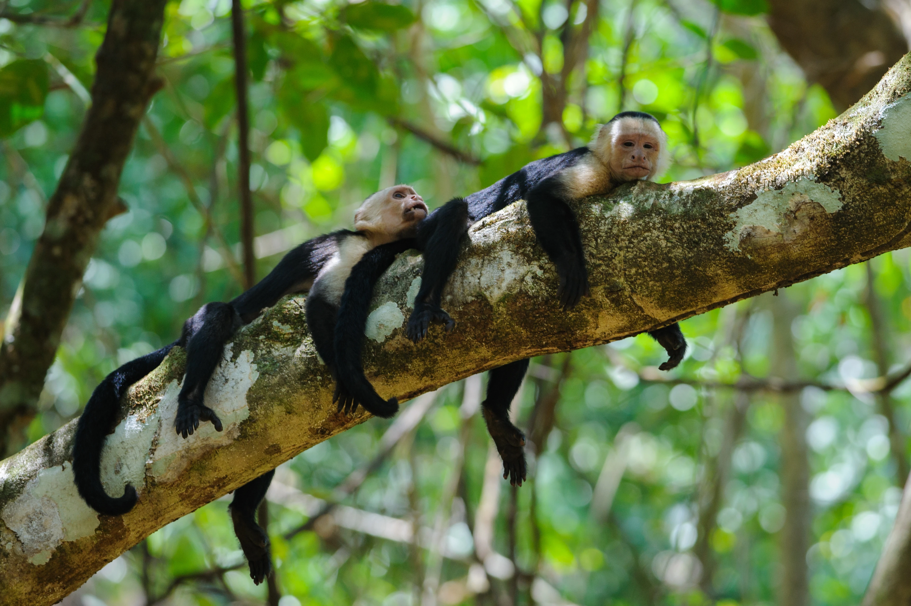

Miembros Fundadores
Espacio preparado para la lista de miembros confirmada.
- La lista de miembros se agregará próximamente.

Asóciate con la Fundación Corcovado para apoyar la conservación, la educación y el desarrollo comunitario a largo plazo en una de las regiones con mayor biodiversidad del mundo.
Patrocinar nuestro trabajo conecta a tu organización con un impacto conservacionista significativo mientras refuerza el compromiso de tu marca con la sostenibilidad.
Tu logo en nuestro sitio web, redes sociales y materiales de campo, alcanzando a miles de visitantes anualmente.
Informes trimestrales detallados que muestran exactamente cómo tu patrocinio contribuye a resultados medibles.
Oportunidades exclusivas para que tu equipo visite nuestros proyectos y participe en actividades de voluntariado.
Ofrecemos paquetes de patrocinio flexibles diseñados para adaptarse a los objetivos y la capacidad de tu organización.
Logo en el sitio web y reporte anual. Perfecto para pequeñas empresas que inician su camino de sostenibilidad.
$1,000 - $5,000 / año
Visibilidad mejorada, menciones en redes sociales e invitación a eventos anuales de donantes.
$5,000 - $15,000 / año
Ubicación premium, informes de impacto dedicados, días de voluntariado para tu equipo y oportunidades de nombramiento.
$15,000+ / año
Hemos preparado estas categorías para organizar la lista de miembros. Los nombres de los patrocinadores se incorporarán cuando se confirme la clasificación.
Espacio preparado para la lista de miembros confirmada.
Espacio preparado para la lista de miembros confirmada.
Espacio preparado para la lista de miembros confirmada.
Espacio preparado para la lista de miembros confirmada.
Espacio preparado para la lista de miembros confirmada.
Organizaciones que hacen posible nuestro trabajo.
Ya sea a través de un patrocinio o una donación, tu apoyo crea un impacto duradero en uno de los ecosistemas más preciados de la Tierra.